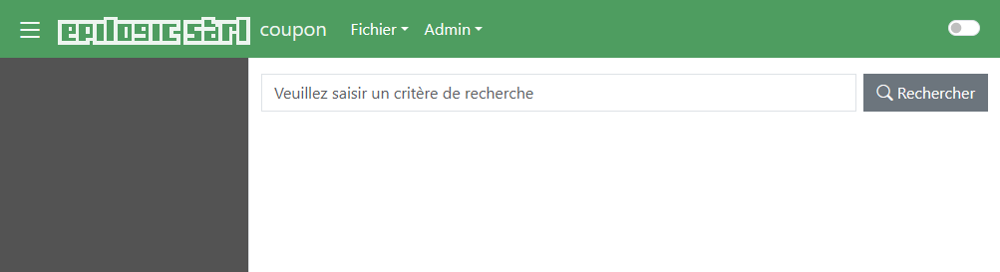
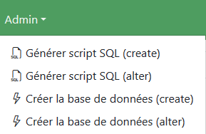
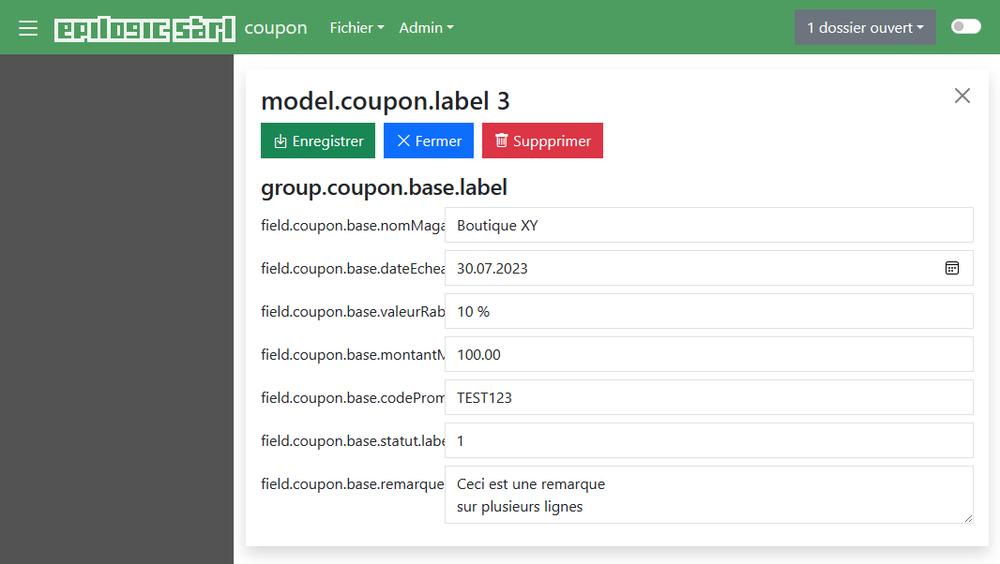
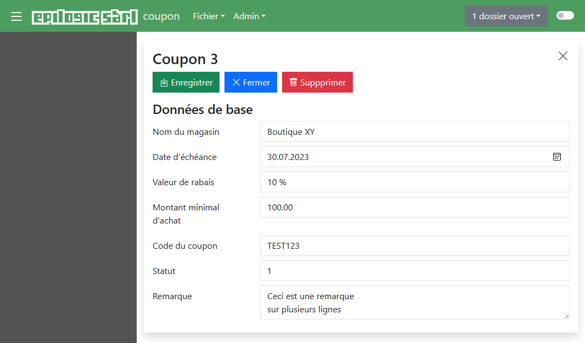
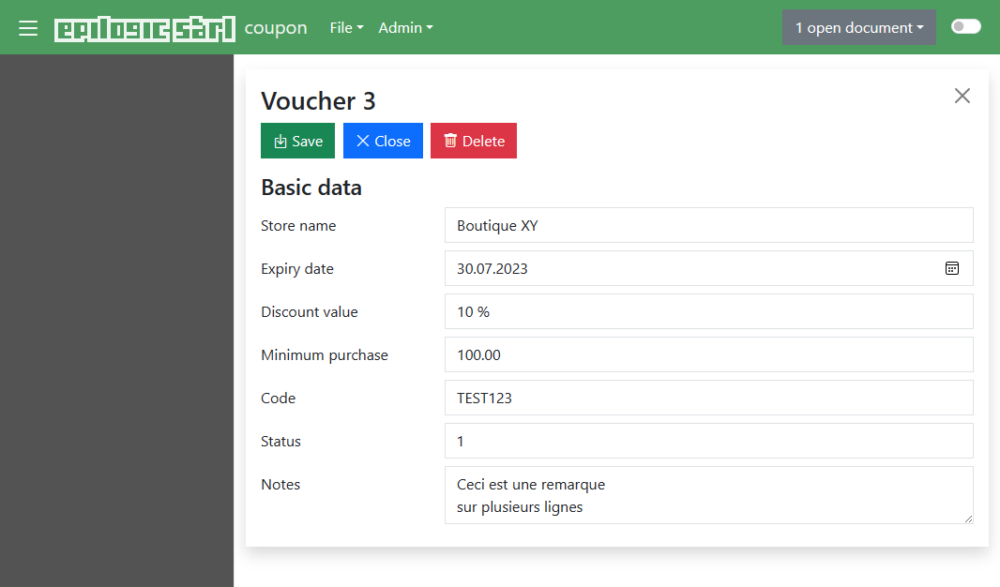

Coupon - partie 1¶
Introduction¶
Dans cette leçon, nous allons mettre en place une structure de données permettant de gérer des coupons de réduction. Le but est d'avoir un répertoire de bons de réduction. Nous verrons comment construire une description métier et la lier à une base de données.
Dans la suite de ce document, nous essaierons de décrire les opérations à réaliser et leur signification. Un symbole 👉 est indiqué au début de chaque ligne décrivant une opération à effectuer. Vous pouvez directement sauter à ces lignes si vous souhaitez mettre en place rapidement l'application.
Schéma de données¶
Nous allons mettre en place une structure très simple permettant de gérer les données suivantes:
- Identifiant de coupon
- Nom du magasin
- Date d'échéance
- Valeur de rabais
- Montant minimal d'achat
- Code promotionnel
- Statut (1/0, pour disponible/consommé)
- Remarque
Nous allons commencer par établir le schéma de données, c'est-à-dire les tables et les colonnes. La structure de données est simple et peut se limiter à une table unique.
👉 Commencez par créer un dossier d'application coupon dans C:\opt\ewt.
Créez-y ensuite un fichier schema.xml avec le contenu suivant:
1 2 3 4 5 6 7 8 9 10 11 12 13 | |
La description de schéma ci-dessus décrit les champs de la base de données qui serviront à stocker les valeurs de nos coupons. Les noms de colonnes sont suffisamment explicites pour savoir ce qu'ils contiennent. Revenons toutefois sur certains d'autre eux:
idCoupon: L'attributisPrimaryKey="true"indique que ce champ est l'identifiant principal qui fait office de clé primaire. On utilise ici des entiers comme identifiants, d'où letype="int".Echeance: Ce champ est une date. On utilise donc le typedategéré par le serveur de base de donnéesRemarque: Ce champ peut avoir une longueur variable. Pour cette raison, on lui attribue le typeclob(Character Large OBject). Il s'agit d'un type de donnée pouvant contenir un texte long.
Description de champs¶
Le schéma de données a permis de définir la structure de la table et des colonnes dans lesquelles seront stockés nos coupons. Il faut à présent décrire comment ces champs seront présentés à l'écran. Pour ce faire, on doit construire une description métier de nos coupons.
Dans Ewt, la structure métier se présente sous la forme d'une hiérarchie à 3
niveaux: modèle > groupe > champ:
- Le modèle décrit le type d'objet, on peut le voir comme une classe en java. Dans notre cas, nous allons créer un modèle "coupon".
- Le groupe décrit une partie d'objet, on peut le voir comme un ensemble de
données. Dans notre cas, le groupe sera associé à la table
Couponque nous avons défini dans notre schéma. - Le champ décrit un champ de formulaire. C'est l'élément de formulaire dans lequel un utilisateur pourra saisir une valeur. Chaque champ fera référence à une colonne de notre schéma.
👉 Créez un fichier descript.xml dans le dossier de l'application et
placez-y le contenu suivant:
1 2 3 4 5 6 7 8 9 10 11 12 13 14 15 16 17 18 19 20 21 22 23 24 25 26 27 28 | |
On y retrouve la structure de modèles (model), groupes (group) et champs
(field) décrite plus haut.
Notre modèle porte le nom coupon et contient deux attributs
supplémentaires. Les attributs maingroup et mainfield permettent
respectivement de spécifier le nom du groupe principal et le nom de
l'identifiant dans ce groupe principal. Ces éléments sont importants car ils
indiquent au moteur comment il peut identifier un coupon. Dans le cas
présent, un coupon sera identifié au moyen de la valeur du champ idCoupon
prise dans le groupe base.
Le groupe base fait référence à la table Coupon décrite dans notre
schéma. On indique également son type. Les groupes peuvent être soit de
type single comme ci-dessus, soit de type multi.
Un groupe de type single est un groupe simple qui s'appuie sur une unique
ligne dans une table de la base de données. Au niveau de l'interface
utilisateur, ce type de groupe se présente sous la forme d'un formulaire
standard constitué d'une série de champs.
Un groupe de type multi est un groupe qui s'appuie sur plusieurs lignes
d'une table de la base de données. Au niveau de l'interface utilisateur, ce
type de groupe se présente sous la forme d'une table de valeurs. Nous
revenons sur ce type de groupe plus tard.
Chaque champ (field) est décrit au moyen
- d'un nom (
name) : on notera au passage que le nom de champ peut différer du nom de colonne correspondant au niveau de la base de données - d'un type (
type) : ici le type est le type de champ HTML que nous afficherons au niveau de l'interface utilisateur - d'une colonne (
column) : il s'agit du nom de la colonne définie dans le fichierschema.xmldans laquelle la valeur du champ sera sauvegardée; cette colonne doit bien entendu faire partie de la table référencée par le groupe.
Dans le cas du champ MontantMin, nous avons défini un pattern de formatage
car nous souhaitons que les chiffres soient mis en forme par le moteur. Nous
verrons plus bas l'impact de ce formatage sur l'interface utilisateur.
La partie views n'a pas été abordée jusqu'à présent. Cette partie sert à
décrire les vues que propose notre application. Dans le cas présent, nous
n'avons qu'une seule vue default basée sur un style document et qui se
charge d'afficher le contenu du groupe base.
C'est l'occasion d'aborder la question des styles.
Styles¶
L'application mise en place à la leçon 2 ne contenait pas de styles. L'application se contentait de produire du code HTML brut et laissait au navigateur le soin de l'afficher. Dans le cadre de cette leçon, nous allons utiliser un jeu de styles pré-construis. Il s'agit d'un ensemble de feuilles de style et de fichiers de ressources que nous allons reprendre dans notre application pour avoir une interface utilisateur plus avancée.
👉 Commencez par dézipper le contenu de l'archive baseStyle.zip dans le dossier de l'application. À la fin de l'opération, votre application devrait avoir la structure suivante:
hello
├───i18n
│ ├───base.properties
│ ├───base_EN.properties
│ ├───default.properties
│ ├───default_EN.properties
│ ├───documents.properties
│ └───documents_EN.properties
├───resources
│ ├───bootstrap
│ │ ├───css
│ │ └───js
│ ├───css
│ ├───dropzone
│ ├───images
│ ├───jquery
│ ├───js
│ ├───popper
│ ├───sounds
│ └───tinymce
│ └───...
├───scripts
│ ├───search.script
│ └───toolbox.script
├───stylesheets
│ ├───base.xsl
│ ├───constants.xsl
│ ├───default.xsl
│ ├───document.xsl
│ └───templates.xsl
├───descript.xml
└───schema.xml
De nombreux répertoires et sous-répertoires ont été créés. Nous n'allons pas passer en revue ces derniers dans le détail. Voici tout de même quelques informations générales:
i18n: Ce répertoire contient les fichiers de langues.resources: Ce répertoire contient des ressources, c'est-à-dire des images, des scripts, des styles CSS utilisés pour mettre en forme l'interface.scripts: On connaît déjà ce répertoire : il contient les scripts de traitement de l'application. Dans le cas présent, deux scripts ont été créés. Le fichiersearch.scriptsert à effectuer une recherche de dossiers dans la base de données et le scripttoolbox.scriptcontient une fonction sur laquelle nous revenons dans la prochaine leçon.stylesheets: Ce répertoire contient des feuilles de style XSL. Elles servent à transformer l'arbre de sortie généré par le moteur en pages HTML.
Fichier config.xml¶
Pour que notre application sache comment utiliser ces nouveaux éléments, il faut les déclarer au niveau du fichier de configuration de notre application.
👉 Créez un fichier config.xml contenant les éléments suivants:
1 2 3 4 5 6 7 8 9 10 11 12 13 14 15 16 17 18 19 | |
Par rapport à la leçon 2, on a ici ajouté les éléments styles et bundles
(et on a retiré le bloc notifications).
Le premier définit les styles default et documents qui s'appuient
respectivement sur les feuilles de styles default.xsl et documents.xsl.
On a déjà vu le style documents plus haut au niveau de la définition de la
view dans notre fichier descript.xml.
Le second définit les bundles, ou plutôt, il indique quels bundles le moteur
doit reprendre dans l'arbre de sortie en fonction du style. Dans le cas
ci-dessus, on indique que le style default aura besoin des bundles base
et default (ces derniers sont présents dans le répertoire i18n), alors
que le style documents aura besoin des bundles base et documents.
L'élément defaultBundles permet d'indiquer les bundles que l'on souhaite
toujours avoir dans l'arbre de sortie. Enfin, l'élément defaultLocale
indique au moteur quelle locale utiliser par défaut lorsqu'il n'existe pas de
bundle pour la locale du client.
Test¶
Nous avons mis en place beaucoup de choses. Il nous manque encore quelques
éléments (base de données, sécurité, libellés) mais nous pouvons déjà tenter
de voir à quoi ressemble notre application.
👉 Démarrez le serveur d'application et effectuez une connexion sur l'URL http://localhost:8080/ewt/web/coupon. L'application devrait afficher une page de ce genre:

L'application est toutefois grandement limitée du fait que nous n'avons pas encore créé la base de données. La plupart des fonctionnalités proposées par vont générer des erreurs et/ou des exceptions. Vous pouvez faire un test rapide en cliquant sur le bouton "Rechercher" de la page d'accueil. Un message d'erreur indique qu'une erreur s'est produite. Le log devrait quant à lui signaler une exception ayant pour origine une absence de base de données.
Base de données¶
Ewt est compatible avec plusieurs types de bases de données. Choisissez le chapitre correspondant au serveur de base de données que vous souhaitez mettre en œuvre, puis sautez au chapitre "Connexion à la base de données".
i) PostgreSQL¶
👉 Commencez par créer la base de données. Sur PostgreSQL, la création de la base de données peut se faire au moyen de la commande suivante:
createdb --encoding=UTF-8 --owner=postgres coupon
Il faut à présent adapter notre fichier de configuration pour y spécifier les paramètres de connexion à la base de données.
👉 Ajoutez le bloc suivant dans votre fichier config.xml:
1 2 3 4 5 6 7 8 9 10 | |
👉 Adaptez les paramètres de connexion à la base de données selon votre infrastructure.
ii) SQLite¶
👉 Pour configurer l'application afin qu'elle utilise SQLite, ajoutez le bloc
suivant dans votre fichier config.xml:
1 2 3 4 5 6 7 8 9 | |
Ici, nous avons noté le chemin C:\opt\ewt\coupon\database.db, mais vous
pouvez adapter ce chemin et le nom de fichier à votre guise. SQLite se
chargera de créer automatiquement le fichier de la base de données.
iii) Oracle¶
👉 Connectez-vous avec sqlplus sur le serveur Oracle et passez les requêtes suivantes, en adaptant les noms d'objets (login, mot de passe), les paths et les droits:
1 2 3 4 5 6 7 8 9 10 11 12 13 14 15 16 17 18 19 20 21 22 23 24 25 26 27 | |
Si vous obtenez une erreur du style "ORA-65096: invalid common user or role name" sur la seconde requête, passez alors la requête suivante puis réessayez (source: https://stackoverflow.com/a/41490385/1585114):
ALTER SESSION SET "_ORACLE_SCRIPT"=true;
👉 Ajoutez le bloc suivant dans votre fichier config.xml en adaptant les
paramètres:
1 2 3 4 5 6 7 8 9 | |
iv) MariaDB¶
👉 Créez la base de données via l'outil en ligne de commande mysql ou un
autre outil de requêtage au moyen des requêtes suivantes:
1 2 3 | |
👉 Ajoutez le bloc suivant dans votre fichier config.xml en adaptant les
paramètres:
1 2 3 4 5 6 7 8 9 10 | |
Ici nous spécifions la propriété characterSetResults=utf8mb4 pour
permettre l'utilisation de caractères utf8 sur 4 bytes.
v) MS SQL Server¶
👉 Vous pouvez créer la base de données à l'aide de SQL Server Management Studio (SSMS) ou tout autre gestionnaire de base de données (p.ex DBeaver).
👉 Ajoutez le bloc suivant dans votre fichier config.xml en adaptant les
paramètres:
1 2 3 4 5 6 7 8 9 10 11 12 | |
Application multi-sgbd
Il est possible de définir plusieurs types de connexions à la fois dans le
fichier config.xml et de spécifier la configuration par défaut. Cela
facilite les tests d'une application sur différents serveurs de base de
données et permet également de passer des requêtes sur des serveurs autres
que le serveur de base de données configuré par défaut.
Pour ce faire, ajoutez un attribut name sur l'élément connection, et
indiquez le nom de la connexion par défaut au moyen de l'élément
defaultConnectionConfig. La section database de votre configuration
aura donc la forme suivante:
1 2 3 4 5 6 7 8 9 10 11 12 13 14 15 16 17 18 19 20 21 22 23 24 25 26 27 28 29 | |
Connexion à la base de données¶
👉 Une fois que cela est fait, retournez sur la page web de notre application
et forcez un rechargement de la configuration en sélectionnant l'entrée de
menu Admin > Reset. Cela a pour effet de réinitialiser l'application: les
fichiers de l'application sont rechargés et revalidés, les ressources sont
re-déployées, etc.
La console d'Apache Tomcat devrait alors mentionner les lignes suivantes et ne pas afficher d'erreur. Dans le cas contraire, veuillez prendre note du message d'erreur et effectuer les corrections de configuration en conséquence.
12:15:23.360 DEBUG ch.epilogic.ewt.application.EwtApplication.initializeDatabase() @235 - [coupon] Create connection pool
12:15:23.373 DEBUG ch.epilogic.ewt.database.EwtDatabaseConnectionPool.initialize() @123 - Connexion pool initialization
12:15:23.384 DEBUG ch.epilogic.ewt.database.EwtDatabaseConnectionPool.initialize() @198 - Datasource initialization
Format des logs
Dans ce document, les exemples de logs et de requêtes seront donnés pour une connexion de type PostgreSQL. Ils peuvent donc être légèrement différents de ceux que vous observerez sur votre environnement.
Il nous reste à créer la structure de la base de données. Il serait possible
de le faire manuellement au moyen de requêtes SQL, mais Ewt fournit des
fonctions qui simplifient ce travail. Le menu Admin propose les fonctions
suivantes:

Vous pouvez cliquer sur "Générer script SQL (create)" pour obtenir un script de création de tables basé sur le schéma que nous avons construit en début de leçon. Cela va afficher une page contenant une série de requêtes SQL:
1 2 3 4 5 6 7 8 | |
Il s'agit de requêtes de création de tables adaptées à PostgreSQL. Si vous
avez opté pour un autre type de base de données, les requêtes peuvent être
légèrement différentes. On y retrouve la table Coupon que nous avons
définit dans le fichier schema.xml. D'autres tables techniques sont
également ajoutées par Ewt. Ces dernières permettent notamment de gérer la
concurrence et les tâches planifiées.
La fonction "Générer script SQL (alter)" est une variante qui construit un
script dans lequel les colonnes sont ajoutées au moyen de requêtes de type
ALTER TABLE. Cela peut être pratique si vous décidez d'ajouter de nouveaux
champs a posteriori.
Les fonctions "Créer la base de données (create)" et "Créer la base de données (alter)" se chargent de passer les requêtes directement dans la base de données. Cela permet de créer les tables directement, sans avoir à les reprendre dans un requêteur SQL.
👉 Cliquez sur "Créer la base de données (create)" pour déclencher la création
de notre table Coupon.
La base de données est à présent prêt. Refaisons un test de l'application.
Test¶
👉 Ouvrez la page de l'application et lancez une recherche en cliquant sur "Rechercher" sur la page d'accueil. Le message d'erreur obtenu précédemment devrait être remplacé par un bandeau bleu.
👉 Cliquez à présent dans le menu Fichier > Nouveau > model.coupon.label.
L'application affiche alors une page représentant un dossier "coupon".
Vous pouvez saisir des valeurs dans les champs, les enregistrer, fermer le
dossier, lancer une recherche et l'ouvrir à nouveau: les libellés ont bien
été enregistrés. Vous pouvez également consulter la table Coupon
directement au niveau de la base de données pour vous en convaincre.

La chose qui frappe sur la version actuelle est le format des noms de modèle, groupe et champs. Ewt n'ayant pas trouvé de libellé, il a affiché directement le nom des propriétés correspondantes.
En effet, lorsque l'on définit le champ nomMagasin dans le groupe base
du modèle coupon, Ewt va essayer de récupérer un libellé via l'entrée de
bundle field.coupon.base.nomMagasin.label. Lorsqu'aucun libellé n'est
trouvé, Ewt affiche le nom de la clé elle-même.
On notera au passage que les libellés de l'interface (boutons, menus, etc.) sont corrects car l'archive de styles dézippée précédemment contenait ces libellés (pour le français et l'anglais).
Libellés¶
Ewt s'appuie sur les bundles de langue pour obtenir les libellés des modèles, groupes et champs. Il convient dès lors de définir ces libellés. Pour cette leçon, nous le ferons pour le français et l'anglais.
👉 Cliquez dans le menu Admin > Générer un canevas de langue".
L'application devrait afficher un page avec le contenu suivant:
1 2 3 4 5 6 7 8 9 10 11 12 | |
Il s'agit de la liste des propriétés pour lesquels nous devrons donner un libellé.
👉 Copiez ce texte et collez-le dans un fichier language_fr.properties,
dans le dossier i18n du projet (ce dernier a été créé lors de la
décompression de l'archive contenant les styles).
👉 Renseignez une valeur pour chaque propriété, par exemple:
1 2 3 4 5 6 7 8 9 10 11 12 | |
👉 Sauvegardez le fichier (en utf-8), revenez sur l'application et cliquez
sur Admin > Reset.

Les libellés devraient à présent apparaître en français.
Terminons cette leçon sur notre lancée et ajoutons également les libellés en
anglais. Vous pouvez au choix utiliser la fonction "Générer un canevas de
langue" comme précédemment ou, plus simplement, créer une copie du fichier
language.properties que nous venons de créer.
👉 Copiez le fichier language_fr.properties sous le nom
language_en.properties, éditez ce dernier et remplacé les libellés
français par des libellés anglais.
1 2 3 4 5 6 7 8 9 10 11 12 | |
Nous venons ainsi de définir les libellés de nos champs dans une nouvelle
langue. Comment le vérifier ? En changeant les paramètres de langue par
défaut au niveau de votre navigateur par exemple.
Ewt s'appuie sur la langue du navigateur pour déterminer quelle source de
libellés utiliser. La plupart des navigateurs permettent de changer de
langue au niveau de leurs paramètres. Par exemple sur Edge, cela se fait
dans la section "Langues" des paramètres : il est possible d'ajouter des
langues préférées. Faites figurer l'anglais en premier. Revenez sur la
page de notre application et cliquez sur "Enregistrez". Les libellés
s'affichent alors automatiquement en anglais.

L'impact de la langue ne se limite pas aux libellés. Il porte également
sur les valeurs formatées. Prenons le cas du champ montantMinimal.
👉 Modifiez la valeur du champ "Minimal purchase" à "1234.55" puis cliquez
sur "Save". Le montant est alors formaté selon la forme anglaise:
1,234.55. Rétablissez la langue "Français" comme langue par défaut au
niveau du navigateur puis cliquez à nouveau sur "Save". L'interface passe
alors en français et le montant est formaté selon la notation française:
1'234.55 (il se peut que la valeur 1 234.55 s'affiche en fonction des
règles de formatage définies sur votre environnement).
Remarque
L'expérience réalisée ci-dessus est sans effet sur le champ
"Date d'échéance" car nous avons utilisé un champ de type "date"
(<input type="date">). Dans les navigateurs web actuels, ce
type de champ ne tient pas compte de la langue du document. Qu'il s'agisse
de navigateur basé sur Chrome ou Firefox, le contrôle utilise la locale de
base du navigateur.
Une solution pour régler le problème est de pas utiliser de champ de type
"date" mais "text", et de demander au moteur de se charger du formatage.
Pour ce faire, il faut changer la définition du champ dans le fichier
descript.xml ainsi:
<field name="dateEcheance" type="text" column="Echeance">
<formatting>default</formatting>
</field>
L'élément formatting permet de définir le pattern de formatage de la
valeur. Il a déjà été utilisé pour le champ montantMinimal. Ici on
spécifie le pattern default. En réalité il ne s'agit pas d'un "vrai"
pattern. Il ne serait d'ailleurs pas possible d'en définir un qui soit
valide pour toutes les variantes de format de dates : un pattern
dd/MM/yyyy serait bon pour des dates dans une locale francophone, mais
non valide pour une locale anglophone qui est plus habituée à MM/dd/yyyy.
Le pattern default indique au moteur qu'il doit adapter la valeur pour
lui appliquer un formatage cohérent avec la langue du document.
Il est recommandé d'effectuer le changement de langue sans dossier ouvert car la date qui avait été formatée pour la langue précédente (et qui se retrouve dans le champ) pourrait être mal interprétée dans la nouvelle langue par le moteur.
Conclusion¶
Nous avons vu comment construire un modèle de données et le lier à une base de données. Nous avons également vu comment internationaliser une application au moyen de fichiers de langues.
Cela nous a donné l'occasion de mettre en place une version minimale d'application qui nous permet de gérer des données. Il reste encore de nombreux aspects à aborder pour rendre notre application plus pratique et plus sûre. Nous avons également bénéficié de styles pré-construits sans véritablement chercher à comprendre comment ils sont construits.
Tous ces aspects font l'objet des leçons suivantes.